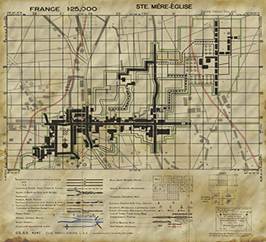

Date: June 6th, 1944
Time: 1:45am
History:
At approximately 1:45am on June 6th, 1944 the 82nd, 3rd Battalion, 505th PIR began landing northwest of Ste. Mere. Eglise, France. The 505th was part of the airborne drop preceeding the land invasion for D-Day. Out of all the airborne drops, the 3rd 505th PIR had the most successful drop. Almost all of the 2nd and 3rd 505th PIR landed within 1km of their targeted drop zone. Ste. Mere Eglise was held by the German 1058 Grenadier Regiment and the 91st Luftlande Divisions. The liberation of Ste. Mere Eglise by the 82nd was one of the most significant victories by the airborne on D-Day.
Objectives:
Allies: Break through to the church at the town square of Ste. Mere Eglise. It's important to secure the cabbage farm south of the town to serve as a temporary outpost in case of a counter-attack. The hotel in town is used as a quartier for the enemy troops, make sure to clear it, so we can build up a medical station there.
Axis: Don't let the invading forces reach the town square at all cost. Make sure to set up defence posts on all possible routes, especially the hotel and the northern town square.
Designed by: Mike Hufnagl
Overhauled by: Toni "Ranson" Kreska with support of Daniel "Huri" Assmann